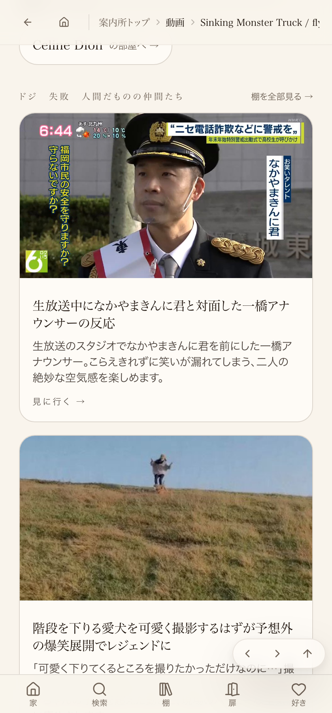

① 何を直したか（1行）
その日にX/LINE/自動仕入れで入ってきたリンクを、その日のうちに①コピー空／英題のまま／関連薄い を機械的に洗い出し②日本語タイトル・コピーに直し③関連導線を最低4件通す「1日1回の見回り係」を新設し、queueの実例1件を①〜④まで仕上げて本番へ公開・実測した。
② 数字
| 項目 | 状態 |
|---|---|
| 見回りスクリプト | scripts/patrol/daily-link-triage.mjs実装・main合流済み。--dry-run実行で判定を確認済み |
| queue（外部から入ったリンク台帳） | scripts/patrol/daily-link-triage-queue.json。実例1件（w1gCW_66zzc／flyingtower「Sinking Monster Truck」）を登録・仕上げ済み |
| ①日本語タイトル・コピー | 本番反映を実測確認（「満員御礼のモンスタートラック、泥水にドボン」「マイ・ハート・ウィル・ゴー・オン」が本文に出現） |
| ②関連導線（LIKE THIS?＝文脈が近いもの） | 本番HTMLを実測。laugh系8件（にこにこ動画伝説／もも梅コピー／nyangostar／BBCインタビュー／中川家中国語リアクション／マーサ白鳥アルツハイマー／Jack Black サックスアブーム／おもしろ動物ループ）が正しく出ていることを確認（最終公開・x-deployment-id: psr2.4f3d130） |
| ③常設化（1日1回・launchd） | テンプレートはリポジトリへ保存済み（scripts/patrol/launchd/com.tamago.joy-relief-station.daily-link-triage.plist）。~/Library/LaunchAgents/への書き込み・launchctl実行はこのセッションの権限では拒否され未完了。.claude/PENDING_DECISIONS.mdに1行の依頼（cp 2行）を記録済み |
③ 経緯（正直に報告）
並行して動いていた別セッションのローカル未pushブランチに、関連導線の修正（6737c3db）だけが取り残されていた（origin/mainには未合流）。1回目の公開直後に本番HTMLを実測して初めて気づき、そのコミットをcherry-pickして2回目の公開を実施。さらに実測の過程で、「LIKE THIS?」（文脈が近いもの担当）は正しくlaugh系に絞られている一方、「こちらもどうぞ」（NextRecommendations＝意外性担当・世界をまたいでよい仕様）に音楽系カードが混ざっていたのは仕様どおりでバグではないと切り分けた。ついでに見つけた別の穴（棚未登録の動画では「つづけて、これはいかが」の絞り込みが効かない設計漏れ）も合わせて修正し、3回目の公開で反映した。
④ 押せるリンク（実物のページ）
実測方法：本番URLをHTMLごと取得し、「LIKE THIS?」セクション直後のリンク一覧がinternet-classics/niconico-legend・funnymovie/momoume-copy・nyangostar/overqualified-for-the-job・internet-classics/bbc-interview・nakagawake-chinese-taiwan-reaction・marta-swan-lake-alzheimer・jack-black/sax-a-boom・funny-animals-loopの8件（すべてlaugh系）であることを確認（2026-09-05 22:22最終公開後）。Lovableの公開ボタンは計3回実際に押し、x-deployment-idの変化を都度確認済み（最終：psr2.4f3d130）。
⑤ スクリーンショット（2026-09-06追記・461番）
Lovableへ再度「変更を公開」を実行した直後に、実例ページを実際にヘッドレスブラウザで開いてキャプチャ。「Celine Dionの部屋へ→」（タイタニックのテーマへの片道リンク）・「ドジ 失敗 人間だものの仲間たち」棚・関連カード（動物・お笑い系）が表示されていることが見て分かる。

状態
①実装：完了 ②main合流：完了 ③Lovable公開：完了（実測・x-deployment-id変化を3回確認） ④実測確認：完了（LIKE THIS?のlaugh系8件を実測） ⑤常設化（launchd）：未完了（判断待ち・上記②参照） ⑥店主の実画面確認：未。